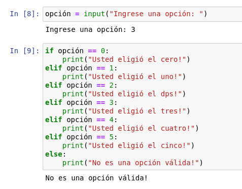
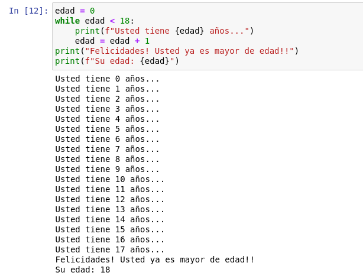
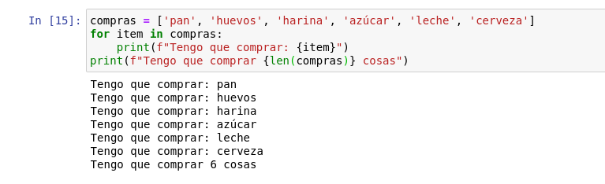
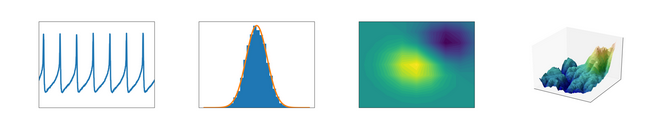

#DataSchool
Python
Nadando con datos
Jueves 30 de abril de 2020
10 a 12 (UTC-3) | 8 a 10 (UTC-5)
Archivos de Ejemplo
https://github.com/lecovi/dataschool-py3Descargar ZIP
Repaso de Ayer
Cadena de Texto
Se definen entre"" o ''Y se les puede dar formato

https://pyformat.info/
https://realpython.com/python-formatted-output/
Listas
- Colección ordenada y modificable.
- Pueden contener cualquier tipo de dato.
- Se utilizan corchetes [ ].
- Accesible como
lista[posición] - Slicing:
lista[inicio:fin:salto]
Tuplas
tuplas.ipynb- Colección ordenada e Inmutable.
- Pueden contener cualquier tipo de dato.
- Se utilizan paréntesis ( ).
- Accesible como
tupla[posición] - Slicing:
tupla[inicio:fin:salto] - Más ligeras que las listas.
- Soportan sólo 2 métodos:
indexycount.
Listas vs Tuplas
| Listas | Tuplas | |
|---|---|---|
| Colección Ordenada | ✔ | ✔ |
| Mutable | ✔ | ✖️ |
Accesible como nombre[posición] |
✔ | ✔ |
Slicing [inicio:fin:paso] |
✔ | ✔ |
| Cualquier tipo de dato | ✔ | ✔ |
| Se construyen con | [] |
() |
| # métodos | 11 | 2 |
Funciones
- Son fragmentos reutilizables de código.
- Argumentos con identificadores [y con valor por defecto.].
- Tupla de Argumentos por posición (
*). - Diccionario de Argumentos (
**). - Devuelven un valor.
def nombre_funcion(par1, par2=100, *args, **kwargs):
""" docstring
...
"""
instruccion1
instruccion2
...
instruccionN
return value
Operadores Lógicos y Relacionales
- Suma:
or - Producto:
and - Negación:
not - Igualdad:
== - No igualdad:
!= - Mayor:
> - Menor:
< - Mayor o igual:
>= - Menor o igual:
<=
Diccionario
diccionarios.ipynb- Colección NO ordenada.
- Modificable.
- Conjunto clave - valor.
- clave: cualquier tipo de dato inmutable.
- valor: cualquier tipo de dato.
- Se utilizan llaves { }.
- Accesible como
diccionario[clave] - No hay Slicing.
If...elif...else
¿Por qué me dice que no es una opción válida?
While
For ... in
Módulos
modulos.ipynb- Archivos individuales con código.
- Se accede a ellos a través de
import.
entonces...
Manos a la obra

Pandas
https://pandas.pydata.org/
the most powerful and flexible open source data analysis / manipulation tool available in any language.
Matplotlib
https://matplotlib.org/
Matplotlib is a comprehensive library for creating static, animated, and interactive visualizations in Python.
Matplotlib makes easy things easy and hard things possible.
hands on!
analisis_exploratorio.ipynb#DataSchool
Introducción a Python
https://bit.ly/lecovi-siteExamen
https://bit.ly/dataschool2_examen_dia_3Leandro E. Colombo Viña | @lecovi

Este trabajo está licenciado bajo Creative Commons Attribution-NonCommercial-ShareAlike 4.0 International License.